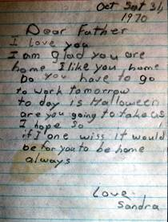

1970
This is the first entry that I made in a Diary. Dad Browning has kept a diary as long as I can remember. After Dad’s death I found a brief case that had belonged to him in our belongings. He had brought it to our home a few months prior to his death, when he and Mom had a quarrel and Mom had ordered him to leave the house. Not knowing just where to go, Dad called Bob and asked him to call me to see if he could come and stay a while with us. I of course said he could, so Bob brought him over to our house. He only had a few things with him and this briefcase was one of them. Dad stayed about a week with us and then called Rich to see if he could go there and give Rich a hand around his home. I took Dad to the Gray Hound bus station and he went up to Rich’s. He stayed there for about a month when he called Mom and asked if he could come back home. She softened and Dad came back home to Sunset.
Dad died March 1967 and as best that I can remember it wasn’t until we moved to Clearfield in the spring of 1970 that we came across the briefcase that he had left while staying with us. Inside the briefcase was a picture of my Grandfather and Grandmother Browning and we believe Dad’s brother, Steven Elias. (Again we only think) that they are in their grocery store on 27th street in Ogden. There was one Five Year Diary that he was using up to the time of his death, and it had recorded 4 years and the starting of 1967 and a new unused Diary that I guess was to start 1968. There was also a few letters from some of Dad’s children from his first marriage. I believe that I have returned those letters to the writers. Anyway, while looking at the items in the briefcase I decided that I should use the blank diary and start keeping it. This first year I only did a hit and miss keeping it but that is how I started keeping a daily diary.
After completing this first Five Year Diary and starting on a second Diary, I had the opportunity of attend a Stake Leadership meeting in which Spencer W. President Kimble of the Quorum of the Twelve Apostle’s, was the visiting Authority. In his address, he counseled each of us to keep a daily journal. I felt quite pleased with the thought that I had started and kept “Almost a full Five Year Diary and started another”, until he added, “Brethren, when I tell you to keep a Daily Journal, I do not mean a Five Year Diary. There isn’t enough room in a Five Year Diary for you to enter what takes place in a day, not alone any feelings.” He then added “a Five Year Diary isn’t worth the paper it is written on.” That really deflated my feelings. Since that time I have kept my Journal Entries in a Journal or a spiral note book and then when we were called on a mission in 2002, I have kept the entries on a computer, printing each month’s entry off and keeping that copy in a binder. This year, 2014, I decided to transcribe the data from my first original Diary. I have taken the option to correct, add to and enlarge upon many of the entries. I have realized that what President Kimball said about the Five Year Diary was totally correct. I have realized that for anyone except myself, the Diary would be of very little value from those entries. Even I find that I do not remember what some of the entries meant. The one thing it does for me often is to remind me and then my memory kicks in and I can fill in some of the days with more informative and interesting details.
(I had no information recorded except this incident which took place during the Summer of 1970.)
I was driving home from work one afternoon, in my pickup when I saw a car, with a lady in it, off to the side of the Freeway, maybe a couple of blocks from the Clearfield exit #650N. I pulled over and walked back, to see what the matter was. The lady said that she was on her way to pick up her husband from work. She know that the car was low on gasoline but had hoped that there was enough to get to her husband and then to a service station. But she didn’t and now she had no way to let her husband know that she wouldn’t be there to pick him up. I didn’t have anything with me to tow her car with but I got a nail can out of my tool box. These cans were empty, one gallon cans that I had cut the top out and used to keep various sizes of small nails in. I had one can that only had a few nail still in it so I emptied the out in the weeds off the roadway. Using a siphon hose that I carried behind my seat, and drew out a little gas from my gas tank, I washed the can clean. I then siphoned out a couple of cans of gas, dumping them into her gas tank. I saved a little gas in the 2nd can, opened up the car hood and poured the remainder of the gas into the carburetor. I had her try to start the car and it started right up. I told her that she should have enough gas to get her to a station. I then got in my truck and came on home. I noticed that she followed me to our home on South Main Street, but when I turned into our driveway she continued on south. I never thought any more about the incident. The next morning when I came out the back door, on the steps was a toe chain. As we were renting the home from Mae’s Uncle Dale and we were just south of his manufacturing plant, I surmised that someone had borrow a chain from him and thinking that he still lived there, had put the chain on his door step. That evening when I got home from work, I took the chain over to Dale. He said that the chain wasn’t his. He could tell that because he bought his chain in the bulk, plus he used a different type of hooks. The only conclusion that we could come up with is that the lady I helped, know where I lived as she followed me and after getting her husband from work, they must have brought the chain to me to show appreciation for my services to her. I think of that incident every time I use a tow chain.
First recorded entry,
Saturday, June 6, 1970
Mom Married Leo Jensen in the Idaho Falls Temple for time only. The Temple president performed the marriage. Although it took place in a Sealing room the President informed both Leo and Mom that this marriage was for time only. He said that Margaret was already sealed to her previous husband and there for she could not be sealed to him. It was a beautiful ceremony. We think this will be a good union for both of them. We think a lot of Leo. Following the ceremony, they had a nice lunching in the Ward recreation hall. There we got to meet and visit Dad Jensen’s family. From meeting Leo’s family we think quite highly of them also.
Monday, June 8, 1970
I started work for Browning Arms Co. today. When I heard that Browning’s were accepting application for computer programmers I went up to apply. I filled out an application and was interviewed by the Data Processing Manager, Frank Rogers. After looking over my application, he commented that I had left one area blank. I had not filled in the monthly wage that I would come to work for. I told him that I was hoping that he would give me some range as to what they would pay. He said that he couldn’t do that, so in my mind, I tried to estimate what we could get by with, as I really needed this job. I put down that I would work for $600 a month. (I really Short Changed myself as I really needed a steady job and though it helped to have a steady income it was not enough.) When he looked at what I put down, he said that if I couldn’t program at all, he could give me a broom and a dust pan and I could sweep floors for he paid the janitor more than that. He told me that he would hire me at that wage and then if I could program as I indicated I could, in 90 days he would raise me to what I should be paid. I told him that I would agree with that offer. I started today as a programmer on the 360 IBM Computer at $600 per month.
Sunday, June 21, 1970
In Sacrament meeting this evening, Bishop Sander’s announced that our Stake Presidency would be in attendance next week to take care of some official business. Of course everyone immediately expects that it will be a reorganization of our Bishopric.
Thursday, June 25, 1970
After getting home from work at Browning Arm’s, Mae and I drove over to Murdock’s to visit with Sister Shirley Murdock and gave her my Sunday school manual. I had asked her if she would teach my Sunday school lesson this Sunday, because I am going to go on a fishing trip to Idaho. After giving her the lesson manual I couldn’t help asking her if Kent was going to be the new Bishop. To me it just seemed right for him to be called. Kent is now serving as the 2nd Counselor, in my mind he would be right for the calling. Shirley said that they hadn’t heard anything. I winked at her and she again said that Kent hadn’t heard anything as to the changes as of this morning when he left for work. That does seem strange, this close to Sunday.
Friday, June 26, 1970
After getting off work at Browning’s I came home and met Bob. We were soon on our way to Idaho Falls to go fishing. I have noted in my Diary that we had both Bruce and Anthus Barlow go with us, but neither Bob nor I remember them being with us. As we left I told Mae that I wanted to be back in time to attend Sacrament meeting as I wanted to see who is put into the new Bishopric. We drove to Idaho Falls and went to Mom and Dad Jensen’s, where we stayed the night with them.
Saturday, June 27, 1970
Bob and I left early this morning for the Teton Valley. We found that the spring water was still quite high but we still had a lot of fun. It was good to go fishing with Bob again. It was late when we returned to Mom and Dad’s this evening and we did come back with a fair catch of fish.
Sunday, June 28, 1970
Mom woke early and started biscuits and gravy along with fried fish. We had just set down and had the blessing on the food, when the phone rang. Dad Jensen answered the phone and then said, “Ken, your wife wants to talk to you”. I had a gasping feeling as I answered the phone. Mae asked me, when we are coming home? I told her that we would try to be home before 3PM as I wanted to attend Sacrament meeting, to see who the new Bishopric would be. She then said that the Stake President would like to talk to her and I together in his office by noon! It was just 7AM then, so I told her that it would take almost 3 hours to drive there, we would leave as quickly as we could. Boy! Did that call spoil a good breakfast! We just ate a bite and left, getting home just before noon. I slipped on a white shirt, suit and tie then Mae and I went straight to the Stake Center to the Stake Presidents office. President Haslem welcomed us in and told me that Kent Murdock had been called to be the new Bishop of the Clearfield First Ward and asked me if I could sustain that motion. I said that I could. He then told me that Bishop Murdock had requested that I be called as his First Counselor and John Ross to be called as Second Counselor. He asked me if I would accept that calling and could I sustain John in that calling. I told him that I would and that could sustain John in his calling. He then asked Mae if she could sustain that action, to which she said that she could. We were then instructed to tell no one else of this conversation until we had been sustained by the vote of the membership of the 1st Ward in Sacrament meeting. That was quite a shock but I couldn’t think of any other two Brothers that I would like to serve with. That was quite a day. That afternoon in Sacrament meeting that motion was put before the congregation and they were asked to sustain us. As far as I could tell the vote was unanimous.
Thursday, July 9, 1970
Today as a newly sustained Bishopric, we with our wife’s went to Salt Lake to the Church Office Building about 2:30 pm. There we met with James A. Cullimore, an assistant to the Quorum of the Twelve Apostles. Kent Murdock was set apart as Bishop of the Clearfield 1st Ward, with John Ross as 2nd Counselor and me as 1st Counselor by James A. Cullimore, assistance to the Quorum of the Twelve. John was also ordained a High Priest as at the time of the calling he held the office of Elder. After that was done we were invited to visit with Brother Wright who is the Building Superintend of Church Office building. He showed us the office where First Presidency and the Quorum of the Twelve meet weekly. Most impressive to in that room was a large oval table, large enough for all fifteen Brethren to set in comfortable chairs. With the oval design every person at the table could have eye contact with all other participants. The table had been cut from one large oak tree and sectioned into 4 leafs so that the grain of the tree made the shape of a butterfly. It made a beautiful table, as well as the rest of the decor was very impressive. This has been a very special event.
Saturday, August 8, 1970
This morning we held a “Charles Browning Family Reunion” and it was held at the Mount Ogden Park. I believe that at the reunion, we had almost all of Charles Henry Browning living descendents, including Bob and Margaret’s families. We had a nice lunch with every family bringing “Pot Luck”. It was a good time renewing family relationships. Before departing we had a meeting in which we discussed the desire to continue this reunion yearly. Roy and Linda were elected as President and Secretary of the reunion for a three year period. As we came home from the reunion, we decided to stop at the Clearfield Stake Fun Days. We all had a nice day but were tired when we got home.
*****
Saturday, August 15, 1970
Terry Bottom is staying with us for a few days. She and Sandy are sure enjoying being together. The two of them help me freeze ten dozen ears of corn. They were sure a lot of help to me, especially as Mae is still feeling sick and under the weather. This evening Mae and I went to a Bishopric and wife’s party. It was held at Bishop Murdock’s home. It was a very enjoyable evening.
Sunday, August 16, 1970
Today was Dad Jensen’s Birthday. Meetings went well. Bishop Murdock conducted the meetings today.
Monday, August 17, 1970
We had planned on going to the Salt Lake Temple this evening but Mae isn’t feeling well, so I stayed after work and went swimming for ½ hour before going on home. This evening Mae and I got the Home teaching records ready for me to take to work with me in the morning.
Tuesday, August 18, 1970
I went into work at 6AM so one of the girls in keypunch could key the information into punched cards. I wrote a short program so that with this information I could run off ward listings for us to use as a Bishopric. I stayed after work and swam for a ½ hour. This evening Mae and I attended a Stake M.I.A. meeting.
Wednesday, August 19, 1970
I went into Browning Arm’s early this morning so that Cline Baxter and I could go swimming for an hour before work. When Browning Arm’s built their offices here in Morgan County, they were required to build a holding pond that would contain enough water to supply the fire sprinkler system with water. They figured that as long as they had to do it, they should make the pond into a swimming pool and allow all the employees and their family free access to it. I believe that if the fire alarm should sound everyone is required to exit the pool. While I was there it was never needed for a fire. After I got home from work our family went with Mom and Dad Porter’s family along with Uncle Verl’s family to Antelope Island for the evening.
Thursday, August 20, 1970
After coming home from work and eating dinner, I went up to the Bishops office and interviewed two Sister’s for positions in the Ward M.I.A. program. Following that as a Bishopric, we met with the Stake Presidency for Oral Evaluations. I am tired this evening and a little discouraged. Today, Mae has been making curtains for a baby basinet and for the stand that I build to put the basinet on. They sure look nice and very babyish.
Friday, August 21, 1970
I had ordered a Browning Bow, with all the accessories from arrows, arrow holder, sights on the bow, gloves and arm shield and it arrived today. I took it out on one of the archery range for a few minutes after lunch and also after work. This evening I took all my family to a banquette sponsored by the 70’s quorum. After the banquette, Mae and I joined with Bishop Murdock, his wife Sherlie, John and his wife Ammy and we attended the Wedding Reception of Brent Hall and his new wife.
Saturday, August 22, 1970
This morning I attended a special Regional Conference from 8AM until 1PM. Later this afternoon I had an interview with Sister Hansen, for the position of Primary President. She felt because of circumstances at this time she would have to decline the passion. Neal and Nola Vance stopped by for a few minutes. It was good to visit with them. I spent the rest of the day with Mae and my family. It was very enjoyable to spend this time with my family.
Sunday, August 23, 1970
Today was my turn to conduct Priesthood and Sacrament meeting. I had asked Sister Dona Kolb, our Ward Relief Society President, and Brother Darcy Wright to speak in Sacrament meeting. They both gave very good talks. I also interviewed Sister Lue Ann Monson for the position of Primary President. She accepted that calling.
Monday, August 24, 1970
I went into work at 7AM so I had some time to work on our Ward Listing. Bishop Murdock flew to Denver on business for a couple of days. Brother Ross and I met for a while this evening and worked on the program for Sacrament meeting for next Sunday.
Tuesday, August 25, 1970
Bishop Murdock is still out of town. This evening I contacted six Brothers and Sisters in our Ward, inviting them to attend the Teachers Training class that will be taught by Sister Paul. Delvin Read went with me Home Teaching this evening. The Brown’s was the first Family we went to. They are a young couple with two beautiful little girls. This was the first time I have met the family and I was a little surprised when Brother Brown asked me what he needed to do to be excommunicated. I asked him why and he said that he wanted his name taken off the church records. I told him it wasn’t really very hard. All he needed to do was to write a letter addressed to Bishop Murdock requesting that he wanted his name removed from the Church records, date the letter and sign it. He could then either mail it to Bishop Murdock or if he wanted I could hand deliver it for him. We then visited the Gunn’s, but they had friends visiting so they didn’t invite us in. The next time I met with Bishop Murdock I reported the conversation I had with Brother Brown. He told me that prior to being called to be Bishop he had the same conversation with him, but he never did write the letter.
Wednesday, August 26, 1970 Mom Browning’s Birthday
Mae and the kids met me at work at 4:30PM. We went swimming in the pool there at Browning Arms. Mae came in swimming with us this time. I think this was the first time she has come into the pool. After our swim, we drove into Morgan and looked at a couple of homes that are for rent. We then went to Como Springs and ate our lunch under the trees. Como Springs was a great swimming pool at one time but it is getting quite run down now.
Thursday, August 27, 1970
I attended an Introductory meeting on the Teacher Trainer Class, as Sister Paul was not able to attend this evening. Later I visited with Bishop Murdock about our thoughts of moving up to Morgan. He said that he would like to think it over and pray about it before we made any decisions.
Friday, August 28, 1970
Before I left for work, we gathered up all our items that we will need to take with us this evening. We are going to go up to Larry and Tammy’s in Liberty for the week end, as soon as I get home from work. As always we had a very enjoyable evening visiting with Larry’s family.
Saturday, August 29, 1970
Larry and I got up at 2:30 this morning to go bow hunting. We took his horse Star and Tammy’s horse April. My horse is about to foe, so we didn’t feel we should take her up into the hills. We road east to the hills and then continued up the mountains. At one area we had to drop down into a draw. It was a little steeper than I thought was wise to ride the horses and I questioned Larry about it. He felt confident that they could maneuver the trail ok, so he went ahead. I got off and lead April down the trail. Just before reaching the bottom, the rains jerked back and I turned to see April rearing up. I jumped forward to get out of her way as she came down. Again she reared and this time I jumped off the side of the trail as she came down and ran past me. I pulled her in and as she stopped I could see that she had broken her front leg at the ankle. The bone was protruding through the skin. We were an estimated five miles from Larry’s house. There were no roads into the area which we were in. We determined that we would have to put the horse down, the only problem was that we had no fire arm with us, as it s against to law to carry a fire arm while bow hunting. Larry tried to shot the horse in the heart, but there is too much flesh and mussel to get an arrow to penetrate that deep. Larry finally cut the jugular van and we just had to wait until the horse fell over dead. We loaded the saddle onto Larry’s horse and let it out of the mountain back to Larry’s. That sure took all the fun out of the hunt and I have never gone bow hunting again. After getting home we did take our families and a picnic lunch and went up to Willard Bason.
Sunday, August 30, 1970
Larry and I attended Priesthood meeting in their Ward and then came back home and got our families to attend Sunday school. We spent a very relaxing and enjoyable day with Larry and Tammy and their family. We left this afternoon in time so that we could attend Sacrament meeting in the Mound Fort Ward. Luana Moulton spoke in their Sacrament program prior to her leaving on a mission call.
Monday, August 31, 1970
School started today and Sandy is in the third grade. The school building is just across the street from us so that makes it very handy. Cline Baxter gave me a 1949 Chevrolet today. I am not sure yet if is worthwhile. I attended Bishopric meeting this evening.
Tuesday, September 1, 1970
After returning from work, I stayed home with my family this evening. One of the girls at work gave me a gerbil for the children to have a pet. I fixed an old bird cage up for it to stay in. The children sure love it.
Wednesday, September 2, 1970
After work Mae and the children met me at Browning Arms. We went swimming for a half hour in the pool. We then drove to Morgan to look at a house that one of the ladies at work told me that is was up for rent. Mae had prepared a lunch so we stopped at Como Springs and ate lunch under the shade trees. Mike started walking today by himself. My family is special.
Thursday, September 3, 1970
Bishop Murdock called me to tell me that he had a 1964 Chevrolet Station Wagon come into his store and he asked if I would like to try it out. We drove over and got the car and drove to Willard. Besides trying out the car, we tried to find some peaches for sale, but it is still too early for them. The car really seems to be in good condition and with our family it would really be nice.
(I will add some to this journal that I hadn’t recorded previously.) Some time back, since we had moved to Clearfield, we drove to Ogden to attend Sacrament meeting. I believe it was because Myrna Moulton was reporting on her mission. We were running late and so were driving quite fast on the freeway, when the bearing in the differential froze up. The rear wheels lock and I really had a hard time keeping the car from going off the highway. We were also lucky that there was no traffic around us as the car swerved back and forth. Just as I got the car under control and almost to a stop, there was a loud bang and the wheels started turning. Although there was still a loud squeak we were able to drive it on the Mound Fort Chappell. After meeting we drove it home very slowly, even with it still squeaking. The following day I took the rear end apart and it was completely ruined. I tried two different rear ends that I found from the junk yard, but neither would fit. I found out that for that year of a Nash Rambler they had made about 8 different models of rear ends. I couldn’t find the model that fit our car. We there for were using my Chevrolet Pickup for our family transportation.
Friday, September 4, 1970
After getting home from work and having dinner, we took our family and went shopping. We went to the Food Discount Center in Ogden.
Saturday, September 5, 1970
It rained all day today. I help Mae around the house. This evening we had planned on going to a movie but due to the weather we just drove to Roy and got some ice cream.
Sunday, September 6, 1970
As a Bishopric, we had a very busy day. We started with Bishopric meeting at 7AM and were either in meetings or interviews the rest of the day. I got home about 6PM. It rained all day.
Monday, September 7, 1970
I had the day off due to Labor Day. After we had breakfast I took Sandy and Shellie with me to Browning Arms where I did some work on our Ward Membership list. It is pretty simple to keep a listing of all ward members up to date now that I have them on the computer. It only took me a few minutes and then we went for a swim. We weren’t in very long as the water is getting quite cold. After returning home we took all our Family and joined a Family Gathering at Uncle Dale and Aunt Esters home. This evening Mae and I attended a viewing for Sister Tuttel. She passed away last Saturday at 1:30 AM after a lingering illness and age.
In the back of my Diary I found a note that I had written that I will insert here.
This evening I was helping Sandy and Shellie with their prayers before they went to bed. While helping Shellie (3 years old), I told her to Thank Heavenly Father that we could go swimming. To this she added, “even if it was freezing and we freezed.” Then I told her the Bless Momma that would soon have our new baby. To this she added “so I can rock her like this (adding with actions of holding a baby in her armes).
Tuesday, September 8, 1970
Today I signed the finance papers to purchase the 1964 Chevrolet Station Wagon. We have been driving it for a few days and feel very well satisfied with the car. This evening I attended the M.I.A. Opening Social. Latter this evening, John and I cleaned the closet in the Bishops office. Mae has had some labor pains today but they are not regular and may be false.
Wednesday, September 9, 1970
Mae went into the doctor for her checkup. The Doctor said that it could be a few more days before the baby will arrive. We held Family Home Evening. After a short lesson I played with the children on the floor. At 8PM I met with Bishop Murdock, Brother Ross, Brother Ken Porter and Brother John Lester for the purpose of confirming Brother Lester as a counselor to Brother Porter.
Thursday, September 10, 1970
Work went well today. This evening Bishop Murdock and I went visiting. A couple of additions to this short entry. As we got out of the car to visit a family, a dog barked. (you have to know that Bishop Murdock is a large man with an athletic build and really looks sharp in a suit, well over 6 feet toll,) When Bishop heard the bark, he froze and said, “Ken, you go first!” The second thing that I would add here, although I am sure this should be at an earlier date. One of the goals, Bishop set when we were first called into the Bishopric, was that when we received a new membership record into the Ward, is that we visit that person or Family before the membership was officially read in as new members to our Ward. Our ward was quite a transit area with a large Trailer Park and several Apartments. Often records would come in and before the Family or Individual could be located, they would have already moved back out. On one such visit, we knocked on the door of a address we had received. A man answered and when Bishop explained why we were there, the man invited us in and invited us to be seated. The man set across the room and I noticed that he set quite tense on the edge of the chair. We visited for a few minutes and then Bishop said that we needed to be going, as we had others to visit. The man then asked, “Bishop, why are you’re here?” Bishop then said that we had come to get aquatinted with him. The man then said, “No, Bishop, Why did you come to visit me.” Bishop Murdock then said that we had received his membership record and we just wanted to meet him. At this the man responded, “I can’t believe this, I have never had a Bishop in my home that he didn’t want something and it was usually a donation.” To this Bishop Murdock said “He did have one request, we would like to invite you and your family him to join us in our Ward meetings.”
Friday, September 11, 1970
Mae went into Dr. Paul Naisbitt again today and he told her that he wanted her to be at the hospital at 9:30 AM Saturday, and he would start her into labor.
An addition here: with our leaving the bank’s employment, we did not have a health insurance. We had been paying Dr. Naisbitt with each visit, but we had not been able to save any for the hospital bill. We figured that we would have to just make payments on that bill. However when we talked to the Hospital, we found out that Bishop Murdock, knowing of our financial situation had made arrangement that our bill was written off on Welfare.
Saturday, September 12, 1970
I took Mae to the hospital at 9:30AM as Dr. Naisbitt requested. Tammy had gone into the Hospital earlier this morning and had given birth to a baby girl. Tammy had called Mae last night and told her that we was going into the hospital and said that she would save her a room so that they could be together. When we took Mae in, sure enough Tammy had talked to one of the Nurses, who was a friend of ours from the Mound Fort Ward, and she arranged for Mae and Tammy to be in the same room after their delivery’s. It wasn’t long after we got her admitted before they started Mae into labor. At 2:24PM Mae gave birth to a 7lb 14oz baby boy. He was 20 inches long and had dark hair. He looks a lot like Shellie. I was able to be with Mae the complete time. I sure have to give thanks to my Father in Heaven for my many blessing. Mae was tired but she did great.
Sunday, September 13, 1970
I attended our Sunday morning Bishopric meeting and being it was my turn to conduct, I attended Priesthood meeting and Sacrament meeting but was excused to be with my children the rest of the day. I took the children up to the Hospital and they got to see their baby brother through the nursery window. The children were sure happy. Mom Jensen came down from Idaho Falls to help me with the children. Mae feels like she would like to name this baby, David and we added Glenn as a middle name in honor of Dad Porter.
Monday, September 14, 1970
Although Mom Jensen was here to care for the children while I was at work, they still missed their mother. After I returned home from work I went into the hospital to see Mae and our new son. Mae was in a pretty yellow night goon that Mom let her take, she was sure pretty and I love her so much. I was able to hold our little David this evening. That was sure special. I had a hard time leaving them to go home.
Tuesday, September 15, 1970
I took the day off work so I could get Mae and the baby. The children are sure happy to have Mae and the baby come home. It is sure good to have Mae home. As Mae, our baby and I were coming down and getting off the elevator we met Mom and Dad Porter. They were just going up as Hal had to be brought into the hospital for drug over dose. That sure put a damper on the event. Hal is in pretty bad shape from what Mom and Dad knew then.
Wednesday, September 16, 1970
Mom Jensen was here to help out and relieve some of the regular house hold duties so Mae can recover. I went to work as normal. After getting home and having dinner, we held Family Home Evening. Shortly after we concluded Family Home evening Brother and Sister Bob Smith along with Brother and Sister Howard McMillen came over to express their love for us. A few minutes later John and Amy Ross came by and within minutes Bishop Kent Murdock and Sister Shirley Murdock also came by. They brought a nice gift from all these great friends. These are great friends that we work with in the Ward Bishopric.
Thursday, September 17, 1970
Today was one of those days with problems, but with FAITH they will work out. Mae took David in to have his blood checked and it tested ok. Roy, Linda and their children, Steve and Barbie came out to see our new baby and Mae. Margaret also called to congratulate us and wish us well. Dad Jensen arrived about 10:45 PM. He always brings love with him when he comes.
Friday, September 18, 1970
Bryce Porter and Deanna Green were married this morning in the Manti Temple. We didn’t attend the Wedding as Mae still is recovering. We did go to their Wedding Reception and it was sure nice. Sandy was asked to be a Flower Girl in the reception line.
Saturday, September 19, 1970
I went out to the Stake Farm and work for 3 ½ hours this morning. I spent the rest of the day working on some Chester drawers for the children. Mom and Dad Jensen went back to Idaho Falls this afternoon. It has sure been a lot of help having Mom here to help with the children for a few days.
Sunday, September 20, 1970
We held a Youth Fireside at which the youth Honored Bishop and Sister Sander’s as well as Brother and Sister Wright, for the service they have given to the Ward. After taking the children home from Sacrament meeting, Mae and I left Shellie and Mike with Sandy to tend for a little while. We took David with us and drove to Ogden and visited with Roy and Linda for a few minutes.
Monday, September 21, 1970
When I came home from work, Mae was wearing a very pretty print dress. She said that she was tired at lying around in a robe so she wanted to clean up. She sure is a pretty and wonderful wife. John and I went out visiting this evening. We were able to find 3 families, out of the 6 families we are trying to find. Although it was a 50% success rate we still had some enjoyable visits with those families we did find.
Tuesday, September 22, 1970
This evening Mae went with me to finish my Home Teaching. We enjoyed a nice visit with Sister Brown, but her husband was not there as he was at work. After that visit I took Mae back home and then went back to the Church House to attend M.I.A. After M.I.A. concluded I attended our Ward Choir practice.
Wednesday, September 23, 1970
After getting home from work I put the last coat on the Chester drawers. After dinner we held Family Home evening. Sandy conducted and gave a lesson about the Sacrament. She did a very good job. Mae had already prepared a very good putting for our refreshments. I think every enjoyed the evening.
Thursday, September 24, 1970
After work and getting home, Mae and I went to a Young Married Fireside. Mae probably had Debbie Higley tend the children this evening. Debbie loves the children and they really enjoy her. There had been times, which we later found out about, when Mae would call Debbie to see if she could tend the children and she would say yes I can do it. Later we would find out that she had other plans but she canceled those plans so she could tend our children. We always felt very comfortable leaving the children with Debbie. The speaker this evening was an Institute teacher from Weber State Collage. He spoke about the love that leads you to the altar. He also added in some of the things we need to keep doing to keep our love alive for ever. It was a good evening.
Friday, September 25, 1970
This evening we had planned on taking all our family to a movie after dinner. We ran into a problem as we couldn’t find a show worth taking our family to. We finally gave up on the show and stayed home. We made candy and pop corn and watched a circus show on TV.
Saturday, September 26, 1970
After getting up and after having breakfast this morning I serviced the Chevrolet Station Wagon and my pickup. I was able to sale our Rambler to the junk yard for $75.00 and just gave the 48 Chevrolet to them. This afternoon we took our family and road up to Browning Arms Co. where we did a little skeet shooting. This evening Mae and I attended the Adult Session of Stake Conference.
Sunday, September 27, 1970
We attended Stake Conference this morning. I sand in the Choir for the General Meeting. Bishop Murdock and his family were out of town. He thought that they would be back in time for Sacrament meeting, but they didn’t so I conducted the meeting. Bishop Murdock had invited a blind student, Scott Stanger that is attending B.Y.U. to be our speaker for meeting. He gave a very good talk on the First Principles of the Gospel.
Monday, September 28, 1970
After getting home from work, we were able to buy a bushel of concord grapes. I didn’t have time this evening to help put them up so we will wait until I get home from work tomorrow. I attended Bishopric meeting tonight. Mae hasn’t been feeling too well the past few days. I think she has been trying to do too much.
Tuesday, September 29, 1970
I took off work early this afternoon so that I could take Mae into the Doctor for a check-up. When we got back from the Doctors, I helped Mae put up the grape juice. At 8:30PM we met as a Bishopric at the church house and set the Young Women Officers and Teachers apart in their callings.
Wednesday, September 30, 1970
Mom and Dad Jensen drove down today, just to visit for a while. They were here when I got home from work. This evening our Ward held a special Family Evening to honor the previous Bishopric and Ward clerks, Bishop Sanders, Brother Write, Brother Thompson, Brother Zougg and Brother Child. We had a nice lunching and a short program to honor these Brothers and their wife’s.
Thursday, October 1, 1970
After returning home from work I joined with several other families from our Ward and went to the Stake Welfare Farm where we picked up potatoes. We finished our Ward’s assigned rows about 7PM. We had a good turn out and it went well. After getting home I helped Mae put up 34 quarts of grape juice in two quart bottles.
Friday, October 2, 1970
This evening Mae and I went Square Dancing. The Double J Rustlers had a Birthday Party and ever one brought Pot Luck. We had a very enjoyable evening with great dancing and good food.
Saturday, October 3, 1970
This morning I took our air conditioner out of the window. It is getting cool enough that we want the window closed now. Irven came by about 11 AM and invited my family to go out to Little Mountain at the North end of the Salt Lake, where we will go Pair Kitting. (My Diary entrance indicates that Mom and Dad Jensen, Irven and all of my family went with us. It only indicates that Irven and I actually went up in the “Pair Kit.” I do not really recall this event. I remember that while we lived in Ogden, that Roy and I joined some of Roy’s friends out there Pair Kitting. We used our Oldsmobile as one of the towing vehicles. You use a Pair Shoot and tie it onto a heavy vehicle with a long rope. The vehicle then pulls the rider and at about 15 to 20 mph, the runner’s feet leave the ground and you are flying high in the sky. It is quite a thrill. This activity later became outlawed, as to many were being injured due to ropes breaking under the stress. Also the landing became a little tricky.) My Diary also indicates that I butchered a rabbit. Later this afternoon, John Ross and I went up to Browning Arms and went Skeet Shooting.
Sunday, October 4, 1970
We watched General Conference this morning. This evening I conducted Sacrament meeting. I had asked Irven if he would speak in our meeting. He sure struggled with his talk. He could tell it and so could the congregation. After he told me that he had often given talks in which he didn’t have time to prepare but just relied on the Spirit to guide and the talk went well. This time he thought, why spend so much time preparing but just rely on the Spirit. He said that he found out that if you don’t do your part, especially when you have time, the Spirit leaves you on your own. He said that he would never try that again.
Monday, October 5, 1970
In making the announcements yesterday, we invited anyone from the Ward that would like to attend the Salt Lake Temple this evening, to meet at the church house this evening. We had five couples and two Sisters join us. Dowayne Jessop drove his VW Bus and John Ross drove his car. I think everyone had a very enjoyable time. I took the name of William Ackinson through the Temple. I don’t know if it is any relation to Margaret’s one husband or not.
Tuesday, October 6, 1970
At work we could look out our office window and see it raining, and then later turning to snow. The snow didn’t stay except on the higher mountains. After getting home from work and having dinner, I went up to Bishopric meeting. We had a busy evening as we had a lot to consider and take care of. It was 11:30PM when I got home. I am not sure if this was the Bishopric meeting that this experience happened or not but I will add it here. Bishop Murdock turned to me and asked me to call a certain Sister in our Ward. I looked at him and said “Bishop it is after 11PM.” He just looked at me and said “so what! We are still here aren’t we?” I dialed the number and handed him the phone.
Wednesday, October 7, 1970
Today in the Morgan area it snowed quite hard. After getting home from work I got all my family and we went up to Ogden Valley to Larry and Tammy’s. There we had dinner and then had a very enjoyable Family Home Evening. We really had an enjoyable time.
Thursday, October 8, 1970
After finishing work, I used the Riffle Range there at Browning’s Arms, to sight in my riffle.
(I am going to insert the story of me getting this riffle, as I don’t know if it is written anywhere else.)
I had never owned a rifle but when I would go Deer Hunting I would borrow a riffle from Margaret’s husband, Frank Gun. If I remember correctly it was just before hunting season 1968 that Larry invited me to go hunting with him. The problem was that Margaret and Frank had got a divorce and that left me with no one to borrow a riffle from. Larry had seen an ad in the paper of a new variety store in Ogden that had Deer Hunting Riffles on Sale. We stopped there and they had a 30-06 with no brand marked on it for sale for $30.00 so I bought it. I used it that season and did “by accident I think” get a deer. Later we took the riffle to a target range and after several tries, decided that it wouldn’t sight in. During the next year we again tried several times to sight it in but with little success. Again that fall I got a deer but I don’t know if it was me or Larry’s brother that finally shot the deer but Melvin let me have it. That winter I met a fellow that worked at Browning Arms. In visiting with him I told him of my riffle that I could not get to sight in. He told me to let him take it to work and he would lock it in a sighting clamp and sight it in for me. After a week or two he returned the riffle to me but said he couldn’t get it to shoot twice in the same spot. He wasn’t sure the trouble but he felt that the barrel would have to be completely rebuilt in order to correct the problem. I just let it go, not wanting to spend that kind of money. Shortly before Christmas 1969 a friend,Dick Brower in our Ward, who worked at Smith & Edwards, came to me and said that after December, all fire arms had to be registered. Until the end of December he could still get me a riffle without the registration. Also, Smith & Edwards were having a great sale on riffles now. I told him that I was broke and anything I would spend now would take away from my families Christmas. I told him of my riffle that we couldn’t get to sight in. To this he asked what the riffle looked like, physically. I told him that it looked like new. He suggested that I let him take it out to work and ask his boss what he could give me on a trade in. Maybe I could get enough out of it to put a riffle on lay-a-way and get it out next spring when finances were better. I told him to see what the possibilities would be. A few days later he said that not only did his boss give me a good trade-in price, even more than I had bought it for, plus he bought me a Remington 30-06 pump riffle, on sale and with his employee’s discount. Later that spring I was able to pay it off and get it out of lay-a-way. This is the riffle that I was shooting on the Browning Shooting range. Boy! I sure like this riffle.
This evening Bishop Murdock, John Ross and I attended a Regional Training meeting. The evening training was on additional emphasis on Family Home Evening. The 1st Presidency and Quorum of the Twelve Apostles really feel that the Family is under great attack by the powers of Satan and our Families greatest defense has to come from the Home. It was a very good meeting.
Friday, October 9, 1970
Work went well. After getting home from work and having dinner, Mae and I went into Ogden to the JJ Rustlers square dance. We always look forward to these dances.
Saturday, October 10, 1970
I needed to go up to work for a little while so I took Sandy, Shellie and Mike with me. On the way we stopped at Vergil and Eldeen Barns, who lives up in Mountain Green’s along a stream that breaks off the Weber River. We have known the Barns every since we lived in Sunset in the Sunset 2nd Ward. After moving up to Mountain Green they built a fish hatchery on the stream. I had Vergil take us to the ponds where we let the children, catching four fish. Vergil had asked me which size of fish I wanted them to catch because he charged by the size. I had them catch the medium size. I asked Vergil how much business they did and he said quite a bit. His biggest activity was the fisherman returning from Flaming Gorge Sunday afternoon. They wanted to catch the largest fish they could and a full limit, as they needed to show others how great the fishing trip was they had at the Gorge. I got quite a kick out of that information. After catching the fish we went on up to the office at Browning Arms and I got a little work done before we returned home. After returning home Mae and I went shopping and then to a show. When Mae and I returned home, we found that Shellie wasn’t feeling the best and was running a slight fever.
Sunday, October 11, 1970
When we got up this morning we found that Mike is running a high fever. Shellie still isn’t feeling well. Today in Fast Meeting we had David blessed and officially named on the records of the Church. In the Priesthood circle was Bishop Kent Murdock, John Ross, Dad Porter, Bryce, Terry and I, with me acting as voice.
Monday, October 12, 1970
Shellie is starting to feel a little better but Mike has still been sick all day. After getting home from work and having dinner I joined with Bishop Murdock and Brother Ross and we went visiting members.
Tuesday, October 13, 1970
I took off work ½ hour early this afternoon so that I could get the insurance changed on our pickup and car. I also got a haircut. After dinner I attended M.I.A. After M.I.A. was over Bishop Murdock met with me for a little while. This evening both Mike and Shellie are feeling quite a bit better.
Wednesday, October 14, 1970
We had planned on having Family Home Evening tonight but Mae helped with David Wilson’s Open House. I stayed home with the children. Mom and Dad Jensen drove down from Idaho Falls. They have decided to keep Dad’s house in Idaho Falls and try to sell Mom’s house in Sunset. Although it means that they will be living in Idaho Falls, I think they are making the best move.
Thursday, October 15, 1970
When I got home from work I found out that Mae had had a bad day. The children have kept her going today plus David isn’t feeling well. It also didn’t help when I announced that I was going out visiting this evening. Mae sure is a wonderful wife and Sweetheart. She really tried to be a good Wife and Mother. I sure do love her.
Friday, October 16, 1970
I only worked until noon at Browning Arms and then came home to prepare to go Deer Hunting. Larry Braithwaite, John Willerton, Jim (a friend of John’s) and I went to Manti. We went up Six Mile Canyon where Larry likes to hunt. This time we tried going to a different camp site than we have in the past. In past years we would camp at the bottom of the mountain and then hike the mountain in the early morning before the sun came up. This year Larry had installed special large and wide tires on his four wheel drive ¾ ton truck. With all the camping and hunting gear in the back of the truck, we started up the side of the mountain. All went well until about ½ way up we had to cross a stream. We started through it and the front tires crossed but when the rear tires went into the stream the truck spun out. After a few tries Larry backed the truck back down a little ways. We got out and Larry got some heavy tire chains that Larry had prepared just to fit these wheels. With the chains in place we tried a second time. Again the front tires went through the stream bed but when the rear tires started to climb out the steep bank a rear axle snapped. We backed down through the stream with just the front wheels giving power. It was getting late into the afternoon by then so we unloaded the camping gear and carried it down to a level area where we set up our camp site. We than use some logs and a 4’ heavy truck jack and lifted the rear end of the truck. We removed the rear axles and Larry carried them down the hill to where Larry’s Father, Lynn had set up their camp site. The axles were the same as the ones on Larry’s truck. Using the Axle from Larry’s father truck Larry came back and before dark we got Larry’s truck repaired and put back together. While Larry was changing axels, John, Jim and I set up our camp.
Saturday, October 17, 1970
Before day light we again tried to drive the truck up the hill side. With out the weight of all the camping gear in the rear bed of the truck we went right up the mountain. We had a good hunt; Larry shot a nice two point buck. Early afternoon I shot a nice spike. Larry also shot a doe, which Jim took and Melvin, Larry’s brother had shot a fawn that he gave to John. Larry also drove back to Manti where he was able to purchase two new axels. We reinstalled the one axel back into Larry’s father’s truck and Larry said that he had learned a lesson, never go mountain climbing without a spear axel. We packed up our gear and headed home. It was late when we got home but we had a great time.
Sunday, October 18, 1970
Although I attended my meetings, I haven’t felt very well all day. David hasn’t been feeling very well for the past few days.
Monday, October 19, 1970
I took off work today and will make it up by working next Saturday. I got my rifle cleaned up and put away along with the rest of my hunting equipment. I helped Mae change the front room furniture around before I cut up my deer and wrapped it. I also went into the Doctors. This evening Mae and I attended a Young Married Fireside.
Tuesday, October 20, 1970
I worked at Browning’s Arms and it went well. After getting home and having dinner with my family this evening, I attended M.I.A. John Rose and I were asked if we would be the Judges for the Young Woman’s Desert Cooking contests. That was quite a nice assignment as the deserts were very good. After that John and I went up to the hospital to see Sister Hokum’s who is a patient there. After getting home, Mae and I talked until it was quite late.
Wednesday, October 21, 1970
Mae had dinner ready when I got home from work. After dinner we held Family Home Evening. We sang songs together, had a short lesson and then enjoyed a beautiful cake Mae had made for our refreshments. It was a very enjoyable evening. I have been blessed with a very special wife and children.
Thursday, October 22, 1970
Worked at Browning Arms, work went well. It rained today and snowed in the mountains. After getting home and having super I took the Personal Achievements Booklets out to all the boys that are in the Teachers Quorum. I then went out Home Teaching but no one was at home. When I got home I set down and watched a show in TV.
Friday, October 23, 1970
I worked as normal today. It rained today and snowed in the mountains again today. After getting home from work and having dinner, Mae and I went Square Dancing. For some reason, we did not enjoy the evening like normal. We were tired and got to bed about mid-night.
Saturday, October 24, 1970
I went deer hunting with Monte Nickels this morning. I did get a shoot at a doe and I thought I hit her but we were never able to find her. I don’t like just wounding an animal. It rained and snowed on us until we called it quits. I went into work at 10:45AM and worked until 7PM.
Sunday, October 25, 1970
I conducted meetings today. We had Dennis Higley’s missionary farewell during Sacrament today. I talked with Bishop Murdock about our concerns over finances. We have been thinking of moving up to the Morgan area to save on travel expenses. We have been looking for some place that we might rent. After talking to Bishop Murdock he said that he thought we should wait for now. Although both Mae and I felt a move might be worthwhile, we decided to take Bishop Murdock’s advice.
Monday, October 26, 1970
I took today off work in place of working next Saturday. I helped Mae around the house and also got a few odd jobs done around the house. This evening we met as a Bishopric along with the finance committee.
Tuesday, October 27, 1970
Work went well today. This evening the Primary and M.I.A. sponsored a Ward Halloween party. It seemed to well attended and an overall success. Bob Smith and I met together on the Ward listing to try to get our Ward records correct. That is a big job as they weren’t in the best shape when we took over.
Wednesday, October 28, 1970
We enjoyed a nice Family Home Evening tonight
Thursday, October 29, 1970
After getting home from work and having dinner, I met in meeting with Bishop Murdock and Brother Ross. We worked on a letter to be sent out to the Ward members concerning our Ward Finances. David hasn’t felt very well today. Mae is trying to change his formula and that might be some of his problem.
Friday, October 30, 1970
After getting home we went to Mae’s parents and ate dinner. Mae and her mother then went to a Ward Bazaar. Mae was able to buy most of our children’s Christmas at the Bazaar, quite reasonable.
Saturday, October 31, 1970
I went into Browning Arms this morning at 6AM and worked until 2:30PM. This was to make up the time I took off last Monday. After getting home I went over to the Stake Baptismal Service as we had some children from our Ward being baptized. When I got home I tended David while Mae took Sandy, Shellie & Mike Trick-or-Treating.
Sandy wrote this little note for me when she was 9 years old. As I entered this entry, I inserted a photo of the note into my Diary. I didn’t see this note until Nov. 1, 1970.

Sunday, November 1, 1970
Our meetings went very well today. We also had some time to visit some of our Ward members in their home’s, as a Bishopric. After Fast and Testimony meeting I took Mae, Sandy, Shellie and Mike to the Chuck-O-Rama for dinner.
Monday, November 2, 1970
I had the day off from work. I enjoyed most of the day being with Mae and the children. I did go into Ogden for some supplies for the Ward. I also checked on a job. I really enjoy my work at Browning Arms but the wage is sure tough to live on. Mae went into Dr. Kilburn for an adjustment. Sandy went with me to Brother McMillan’s for a few minutes this evening. Sister McMillan asked me what they could do to change their house. They have a split level home and when one enters the home and come up the stairs they look straight into their kitchen. I suggested that they install a set of Bar Doors. She liked that suggestion. I told them that if they went to the lumber yards and picked out the doors, I would install them.
Tuesday, November 3, 1970
When I got home from work, Mae and I went into the polling area to cast our votes. I am sorry to say that I really need to become more knowledgably about who and what we are voting for. After taking Mae home I went up to M.I.A. this evening.
Wednesday, November 4, 1970
This evening Mae had to attend a M.I.A. Leadership meeting. As I type this entry we tried to remember why Mae would have attended a M.I.A. Leadership meeting because she never served in the M.I.A., only the Primary and Relief Society programs while we lived in Clearfield. I stayed home and tended the children. We had fun playing on the floor and playing games. While playing, Mike took a couple of tumbles and once bumped his head quite hard.
Thursday, November 5, 1970
I worked until 7:45 this evening before leaving for home. That makes for a long day and I am on salary so there is no overtime pay. Mae and the children had gone down to gone to her mother’s for a “Toy Party” and didn’t return until after I had got home.
Friday, November 6, 1970
I worked at Browning Arms today. This evening is normally the night that Mae and I go Square Dancing but tonight we don’t have the $2.00 for the dance, plus gas for the car and babysitting money, so we stayed home with the children. We popped corn and ended up making pop corn balls and watching a good movie on TV. I think that was the best choice.
Saturday, November 7, 1970
I went into work at Browning’s and worked until 4pm. We had invited Hal & Jean, Bryce & Deanna to come to our place for dinner this evening at 6PM. Mae had a very delicious meal prepared as well as a beautiful table set. After dinner we played games and had a wonderful evening visiting. We enjoyed being together until 11:30PM. It was a fun evening.
Sunday, November 8, 1970
Today was a very busy day at Church. Even so Bishop Murdock and I found time to go out visiting. We were able to find some very nice families in our visits.
Monday, November 9, 1970
After coming home from work and having dinner, I went down to McMillan’s and hung two Bar Doors for them. After finishing, Mae and I went to Salt Lake to do some Christmas shopping. This evening we attended a Fireside. Debbie Higley tended our children for us.
Tuesday, November 10, 1970
Mae went into her Doctor for a checkup, this afternoon. When I got home from work she told me that the Doctor told her that everything looked good. This evening I attend M.I.A.
Wednesday, November 11, 1970
This evening, after I got home from work, we went over to Hal and Jean’s. Today is Cindy’s 2nd Birthday and they invited us to celebrate with them. Mom and Dad Porter were also there. I believe that we have a picture taken of the event and I believe that Bryce, Terry, Georgia and Kim were also there. It was a enjoyable evening.
Thursday, November 12, 1970
When I got home from work, I could easily see that Mae had been very busy getting ready for a Young Married party tomorrow evening. Part of it will to be held at our home. After dinner this evening I went visiting with Brother Bob Smith, for a couple of hours.
Friday, November 13, 1970
This evening we held a Young Married Fireside. It was a progressive dinner with part of it at our house. We had a lot of fun and enjoyed some good food. We had a good attendance with 56 people participating.
Saturday, November 14, 1970
This morning I went into work at Browning’s. I took Mike with me so that Mae and the girls could go Christmas shopping. This evening Mae and I were supposed to attend a Banquet, but by the end of the day we were too tired to keep going. We just stayed home with our children.
Sunday, November 15, 1970
Today was my turn to conduct meetings. Everything went well, although it was a very busy day of Church activities to tend to.
Monday, November 16, 1970
Little David slept until 5AM before waking up. When he woke up he was he was ready to stay up. That was ok as I had to go to work. David is sure a sweet enjoyable baby. When I came home this evening Mae had the house clean and was looking very nice. That is the way she is almost every time I come home. She is sure a special Sweetheart and Wife. Bishop Murdock and I went visiting this evening after I had dinner.
Tuesday, November 17, 1970
As normal Mae had dinner about ready when I got home from work. This evening we took all our family the Stake Parent and Youth Night. We really enjoyed it. after all the rest of us went to bed, Mae stayed up to sew on some night gowns that she is making for the relief Society.
Wednesday, November 18, 1970
This evening Mae and I rode with Bishop and Sister Murdock to the Salt Lake Airport. There we saw Elder Dennis Higley before he left for his mission call. On the way home Bishop Murdock stopped for all of us to get an ice cream cone.
Thursday, November 19, 1970
This evening Bishop Murdock and I went visiting. We didn’t have any success finding any one home. we finally went over to the Stake Center and watched our Explore team play in a basket ball game.
Friday, November 20, 1970
I must have taken the day off work today as in my Diary entry I indicate that Mae and I attended the Salt Lake Temple and did some initiatory work. We then picked up some supplies for the ward. We then came home and got things set up to have a Birthday Party for Sandy right after school. Following Sandy’s party we went to a Ward Bazaar and Banquet. Following the dinner we held a Auction in which there was many donated items and services to bid on. I bid on and was awarded a Ride in a Model T Ford Roadster with a Rumble Seat, owned by Bishop Sanders and his son. This whole evening was not only for a Social but also to raise money for our Ward’s operating funds. By the end of the evening we had brought in over two thousand dollars. It has been a very busy day.
Saturday, November 21, 1970
I went into Browning Arms and worked until noon. After getting home I helped Mae with the finishing touches as she is preparing a Birthday dinner for Sandy. She has also invited Mom and Dad Porter, Georgia, Kim and Carl to be here. After dinner and all of our guest left, Mae and I attended a Stake Dance.
Sunday, November 22, 1970
Today really went quite well at church but Satan sure seems to be at me all the time. When I came home I was very depressed and discouraged. I am very grateful for my wonderful wife and her strength and support.
Monday, November 23, 1970
At work today it was very slow. I really didn’t have a lot to do. I really hope that this changes as I do not like just waiting time and not being productive. This evening Mae went with me to finish my Home Teaching visits for the month. After finishing and coming home I spent the rest of the evening playing with my children. That is always enjoyable and nice to have the evening free.
Tuesday, November 24, 1970
Work went ok today. At 5:30PM Brother John Ross and I met with the Primary Presidency and teachers and set them apart in there callings. That is always been an enjoyable experience. I have found that in setting a group, especially Sisters, apart for their calling that the Spirit is really felt. On one occasion after setting a group of Sisters apart, like we did this evening, as we finished with the last Sister, one of the Sisters asked us a question. She then asked how we could give a different blessing to each Sister and most of the time, give a personal blessing that was for just that Sisters needs. That was a Testimony to me that the Lord does guide and inspire those He call’s to fulfill His work. I felt it here tonight! Following this meeting I attended M.I.A. for the opening exercises. Bishop Murdock and I then went over to visit a new family, the Stout’s that has moved into our Ward and to ask Brother Stout if he would accept a calling as a Sunday School Teacher.
Wednesday, November 25, 1970
This evening we stayed home as a Family Night and prepared for Thanksgiving dinner tomorrow. Mae made several pies and Pumpkin Bread, while I made the dressing and stuffed the Turkey.
Thursday, November 26, 1970
I had today off work for the Thanksgiving Day Holiday. It was a wonderful to sleep in and be with my family. Mike didn’t feel very well last night and today. We took our food down to Mom and Dad Porters where we had dinner. After a wonderful feast and a little rest, Bryce, Deanna, Kim, Carl and I went up to Browning Arms where we used the Skit range, shooting shot guns. Mike didn’t feel very well most of the day and this evening Sandy started feeling sick.
Friday, November 27, 1970
Browning Arms gave us a two day Holiday so I was home with my family. We were able to finish our Christmas Shopping today. We all had to buy new shoes today. I guess that was our two girls, Mae and myself, but I noted that we spent $54.00. I installed rain gutters on Mom and Dad Porter home this afternoon. Mae and I went Square Dancing tonight and got home at mid-night.
Saturday, November 28, 1970
Mike and David didn’t sleep well last night. This morning Mae got sick to her stomach. I went into work at 9AM and at 11AM I started feeling a little sick to my stomach. I stayed at work and came home at 9PM.
Sunday, November 29, 1970
Mike and David were still sick this morning. I woke up not feeling well so I stayed home along with all the rest of my family. Today was my day to conduct meeting but Bishop and Brother Ross covered for me this morning. This evening I felt some better as well as Sandy, so the two of us attended Sacrament meeting. I conducted the meeting. We had a African American lady that started work at Browning Arms a month or so ago and I found out that she was a member of the L.D.S. Church. In getting acquainted with her and hearing of her testimony, I had asked if she would share her experience of joining the Church with our Ward in Sacrament meeting today. I was there for very excited that I felt well enough to be there also. I had announced last week in Sacrament meeting that she would be a special speaker today. It was interesting at how large the attendance was this Sunday. Her husband was in attendance with her and I had the opportunity to speak to him and welcome him. In her talk she told of how the missionaries had met with them and invited them to read the Book of Mormon, which they did. She and her one son accepted Baptism after they received a testimony. Her husband also received a Testimony of the Book of Mormon but because he was a minister of an African American group and had quite a large congregation, he felt that he could do more good remaining with this group right now. He hopes that he can work things out to later join the Church, while leaving a greater understanding of the plan of God with his congregation, for now.
Monday, November 30, 1970
I decided that it might be best if I stayed home from work and helped Mae with our children, as almost all of the family is sick. I will plan on working next Saturday to make up for today. I did call in and Roger had no problem with that. Though I was home I really didn’t do much other than be a support for Mae. Mae and I are feeling ok, but all the children feel bad.
Tuesday, December 1, 1970
I went into work today. My family is all doing much better today. After returning home this evening and having dinner, we took Shellie, Mike and David down to Mom Porter who tended them for us. Sandy, Mae and I went over to the Stake Center where we watched our Wards Girl Volleyball team play in a Regional Volley Ball tournament. Our girls lost their first game but won the second game. After the game we went down and got the little children and returned my family home. I then went up to M.I.A. for the opening exercises. I then joined with the Bishopric and Finance committee for our meeting in regards to Ward Finances.
Wednesday, December 2, 1970
I worked at Browning’s today. Because our Ward’s girls won their second game last night they played again tonight. Mae and I went over to watch the games. Our girls plaid a good game but when it was over they had lost. We were pleased with their effort and glad that we had supported them. After the game ended Mae and I attended a Young Married Fireside. It has snowed hard most of the day.
Thursday, December 3, 1970
The roads were plowed by morning so I was able to get to work and return ok this evening. I went up to the Ward this evening to attend our monthly Ward Oral Evaluations with the Priesthood leaders. Following those meetings, as a Bishopric we went down to visit Brother Howard McMillan. He is having a lot of pain in his back.
Friday, December 4, 1970
After getting home from work and having a bite to eat, I went down to Howard McMillan’s to give him a hand in finding an outage in the Ward Financial Records. Howard is our Ward Financial Clerk and I offered to help him find the outage. He has also got behind on some of the work that I will help him catch up on. Sandy wanted to go with me and because Sandy enjoys being with Sister McMillan and their daughter, I took her with me. Sandy is a sweetheart and is no problem having her with me.
Saturday, December 5, 1970
I worked all day at Browning’s today and then stayed even later making some corrections to our Ward listings and running off some new listings. I didn’t get home until 8:30 this evening.
Sunday, December 6, 1970
I went up to the Church office early this morning and was there all day. Today was my turn in conducting as well as today being Fast Sunday. We have had a lot of meetings and interviews today. I got home this evening at 7:30PM, ate some dinner and then in order to spend some time today with our wives, as a Bishopric we took our wives with us as we went up to the Hospital to visit a couple of members that are in our ward, that are presently in the hospital.
Monday, December 7, 1970
We had a wonderful day today. I helped Mae wash windows and then we painted Christmas scenes on them. After Sandy came home from school we took all our family and went looking for a Christmas tree. We were able to find one that we all liked but we had to pay $8.00 for it. When we got home we had dinner then we had Family Home Evening. We told about the first Christmas, sang songs and had refreshments. After we got the little children Sandy asked me about Santa Clause. We had a good talk and Sandy took it well. It is one of those talks that you always know will come but hate to have that time arrive.
Tuesday, December 8, 1970
I woke this morning feeling quite sick. I asked Mae to wait until 8AM when Roger normally gets to the office and then call him to excuse me from work. I woke at 9:30AM feeling much better so hurried and went into work. I worked until 5PM and came home and went back to bed.
Wednesday, December 9, 1970
I went into work this morning. When I got home this evening Mae and I went right over to Dr. Kilburn and each got a treatment. We had Sandy tend the children until we got back. All our family then went down to Grandma and Grandpa Porter’s where Mom had dinner ready for us. We enjoyed it but we were late getting home and everyone to bed.
Thursday, December 10, 1970
When I got home from work, Mae had already fed the children. Mae and I then went to the Primary Presidency Christmas party. It was a progressive dinner affair and everyone seemed to have a wonderful evening. Mae and I visited with Bishop and Sister Shirley Murdock after the program. They are special people and we are blessed to know them.
Friday, December 11, 1970
I came home a little early so that we could attend the Salt Lake Temple. We went with Bishop Kent and Sister Shirley Murdock, John and Amy Rose and Dwayne and Valain Heslop. The temple was very busy tonight so we were after mid-night before getting home. it was a good evening and being with such special people, along with going to a special building.
Saturday, December 12, 1970
I worked at Browning’s until 4PM today. When I got home I started building a Christmas Tree stand. At 6:30PM Mae and I attended a Sunday School Officers and Teachers Christmas party. After getting home from the party I finished building the stand and got the tree set up in the house. When we went to bed, Mae was not feeling very well.
Sunday, December 13, 1970
When I got to the Bishops office this morning we were told that Howard McMillan had been taken to the hospital at 1:30 AM this morning, having suffered a hart attack. He seems to be doing ok but of course will be laid up for a while. Bishop Murdock asked if I could fill in for a while with the Ward financial responsibility. I having been acquainted with the Financial program from having experience with it while I served in the Bishopric in the Mound Fort Ward in Ogden. Of course I told him that I would. During each meeting today, Bishop Murdock announced to the Ward members, of Brother McMillan situation and then added that I would be filling in for him with the financial program. In our Ward they have had the custom of the Financial Clerk passing out receipts before and after meetings. Bishop therefore told the congregation that if they had a donation receipt coming to please contact Brother Browning. Well at the end of the first meeting, I saw a Sister coming straight toward me. Almost in panic I tried to think of her name, but couldn’t. She approached me with a smile and said “Brother Browning I believe you should have a receipt for me”. I replied by saying, I probably do but could you refresh my memory by telling me your name. To this she looked at me almost in horror, as she had lived in the Clearfield 1st Ward almost, if not all of her life. She gave me her name and I gave her, her receipt. This Sister never shook hands with me the rest of the time we lived in Clearfield. I felt bad over the situation for I really offended her. I don’t think there was anyone else that didn’t accept my weaknesses. This afternoon as a Bishopric, we went to the hospital and visited Brother McMillan. He is in good spirits and seems to be doing ok.
Monday, December 14, 1970
As I have retyped the entries from my Diary, into this computer journal, I have noticed that I often had Mondays off from work. I would then make up time by working Saturdays or late in the evening. As I have thought about this I believe that I did this that I could have computer time for testing my programs. Often I have had to reinterpret what I had written in 4 very small lines.
Today we decorated our Christmas tree. We then went down to Mom and Dad Porter’s where we put up and decorated their tree. I believe that with the exception of our first Christmas after I married Mae, Mom Porter has asked me to decorate her tree. After finishing Mom’s tree we left for Salt Lake with all our family, to see the Christmas decorations and lights. We went first to the State Capital, then to Temple Square. We then drove down Main Street to see all the lights. The lights would fill the street until one had to be causes that you didn’t take a traffic light for a decoration. Having had a wonderful day we took all our sleepy children home to put them to bed. Mae then helped me type Donation Receipts for the incoming donations yesterday.
Tuesday, December 15, 1970
This evening we took all the children and attend the Christmas play, but on by our Ward M.I.A. it was very good and all of us enjoyed the program. After going home and getting the children to bed, Mae and I set up and talked for a couple of hours. I sure have a wonderful wife.
Wednesday, December 16, 1970
It snowed quite hard today, butting down 6 to 8 inches of snow. It looks like it will continue to snow more. After dinner this evening we took our family to the Pioneer Elementary school Christmas program. Sandy had the part of a toy soldier in the play. The play was very enjoyable and the children especially enjoyed it. after getting the children to bed Mae And I stayed up putting ice cycles on the Christmas tree.
Thursday, December 17, 1970
I worked late this evening. It snowed most of the day today. When I tried to start the pickup it wouldn’t start. The engine would turn over ok but I wasn’t getting any spark to the plugs. I found that there was moister in the distributor cap so after wiping it out the truck started right up. the children were already to sleep when I got home.
Friday, December 18, 1970
It had snowed hard during the night and this morning as I was shoveling the snow, I strained my back. I hurt so bad that I had to leave work early and I went in a Doctor. I am not sure but I probably went into a Chiropractors. When I came back home I had to stay in bed the rest of the evening. Because of my problem, it left Mae to take care of the Mutual Married party this evening, by herself.
Saturday, December 19, 1970
I am still not feeling very well and stayed down most of the day. We did go to the Wedding Reception for my niece, Linda Davis and Jerry Pool. It was nice but I felt disappointed, for I wanted more for her than what I felt in this reception. Although they were married in the Salt Lake Temple, they had Champaign served to those guests that wanted it. Some of the actions and comments made by Jerry, I felt were of poor taste and improper. Mom and Dad Jensen had come down from Idaho Falls to attend Linda’s reception also. I believe they stayed at Bob and Carroll’s tonight. My younger brother Irven had came to the reception and brought a girl friend with him, Linda Gallop. I believe that Irven and his girlfriend are going to B.Y.U., anyway they stayed the night with us. Irven gave Linda an engagement ring this evening.
A couple of added comments: The Marriage of Linda and Jerry didn’t last very long, however with Linda’s health history, they were able to apply for and did adopt a baby girl that they named Kimberly. It wasn’t very long after the adoption was final that Linda and Jerry got a divorce.
Also I don’t know what happened with Irven and Linda but that engagement didn’t last very long.
Sunday, December 20, 1970
My back is still giving me problems so I have to be careful in what I do. Mae prepared a nice dinner for all of us. We had Mom and Dad Jensen, Irven and Linda as well as our family here for dinner. Mike, Shellie, Sandy and I took part on the Sunday School Christmas program today.
Monday, December 21, 1970
I did go to work this morning. This evening we held a Family Christmas party at Roy and Linda’s. In attendance were Mom and Dad Jensen, Roy, Linda, Steven and Barbara, Margaret, Ronnie, Terry, Linda and her new husband, Bob, Cheryl and their baby, and my family consisting of 6 of us. We had quite a house full but everyone seemed to really enjoy the evening.
Tuesday, December 22, 1970
I had to work until 7PM this evening. Larry, Tammy and their family came down to spend the evening with us. Tammy and Mae made Christmas candy. The children all played together and of course had a good time. Larry and I enjoyed visiting together. We sure had a good time. I don’t think there is anyone that we enjoy spending time with more that the Braithwaite family.
Wednesday, December 23, 1970
This evening after I got home from work we got together with Mae’s family at Mom and Dad Porters. After eating we had a family Christmas party. In attendance were Mom and Dad Porter, Hal and Jean with their daughter Cindi, Bryce and Deanna, (I believe that Terry was on his mission to Germany at this time) Kim, Carl (Mom and Dad’s Indian) and my family, consisting of Mae, myself, Sandy, Shellie, Mike and David. Again we had a house full but also a wonderful evening.
Thursday, December 24, 1970
Browning Arms gave all employees the day off as well as Christmas Day. I got up and prepared breakfast for my family. I then helped Mae with some house work. I then took the children to one of the parks where there was a slaying hill. This evening we took the family out visit a few widows and friends. We then drove around looking at Christmas lights. Took the children home to bed and then at 9.30PM Bishop and Shirley Murdock stopped in to wish us a Merry Christmas.
Friday, December 25, 1970
Sandy came upstairs at 1:30AM and we told her that she had to go back to bed. After 2 or 3 more times of waking us up, we finally gave in and let her get up at 4AM. We had a nice Christmas although it was the smallest we have ever had. The kids were ok with it. After some breakfast we took the children and went to Grandma and Grandpa Porters where Grandma had some gifts for all of us. We had dinner and spent most of the day there.
Saturday, December 26, 1970
We got up and had breakfast this morning. We then we packed and left for Idaho Falls by 11:30AM. We went to Mom and Dad’s Jensen’s where we were invited to spend the weekend.
Sunday, December 27, 1970
Mom and dad sure made us feel welcome. We had such a nice time visiting with both Mom and Dad. We attended meetings with Mom and Dad there in Idaho Falls. After an enjoyable day there we left for home around 7PM. It was 10:15PM when we got home. Mae sure is a wonderful girl and a perfect wife.
Monday, December 28, 1970
When I got home from work this evening, Sandy and Shellie had a Birthday party all arranged for Mae. they had ice cream, cookies, candy and lemon aid all prepared and served it on their dishes. Mae of course acted so excited and that pleased the girls so much. Later this evening I took Mae to a movie and out to eat.
Tuesday, December 29, 1970
After getting home I stayed at home and helped Mae prepare potatoes that we have been asked to furnish for the Stake New Year Eve dance and dinner Thursday evening.
Wednesday, December 30, 1970
Work went well today. After getting home and having some dinner, I went up to the Church house where we held Priesthood Oral Evaluations. Mae came up at 9:30PM and we met with Bishop Murdock for Tithing Settlement.
Thursday, December 31, 1970
I had the day off work so it was nice to stay home. This afternoon Bishop Murdock and I went up to the hospital to visit with some of our Ward members that are in there. This evening we had invited Bob and Pauline Hein, Larry and Tammy Braithwaite, and John and Linda Willerton to meet us at our place and from there all of us attend our Stakes New Years Eve Dance and Dinner. We all had a wonderful evening.